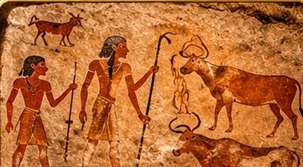
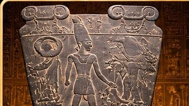
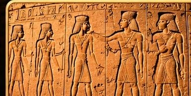

𓆣
العصور التاريخية
𓆣


العصر البطلمي
(332 – 30 ق.م)
آخر عصور الحكم الفرعوني، وانتهى بوفاة كليوباترا السابعة
تعرّف على المزيد


(332 – 30 ق.م)
آخر عصور الحكم الفرعوني، وانتهى بوفاة كليوباترا السابعة
تعرّف على المزيد